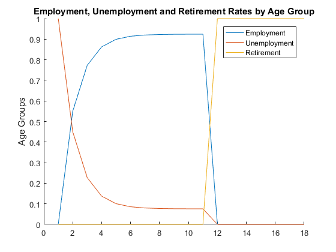
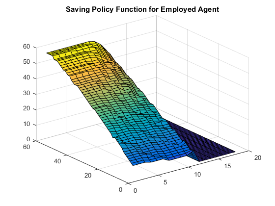
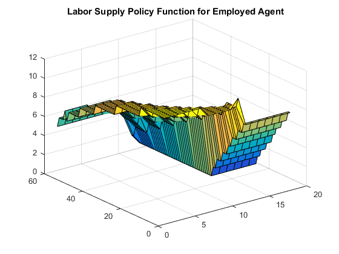

Assume an economy in which same number agents are born every period and live exactly 18 periods. In every period, agents make consumption/saving and labor supply, and retirement timing decisions that maximize their utility. The government taxes agents’ income and provides unemployment and retirement benefits. The solution is found using value function iterations over discretized grids.
Matlab function [download]
clearvars global gamma1 eta A_U A_US gamma2 phiphi %%%%% ENVIRONMENT T=18; %Total years possible to live smoothing=0.50; mort(1:T)=[0.998562276 0.998023418 0.99808485 0.997567474 0.996324643 0.994532501 0.992382903 ... 0.989433908 0.983140995 0.972649591 0.952530049 0.926026991 0.887291451 0.819213623 0.677722672 ... 0.515940907 0.357811933 0.243725901 ]; %Mortality/Survivability %%%%% PARAMETERS EXOGENOUSLY DETERMINED % Firm production technology and wages paid alpha =0.40; %Production parameter, constant returns to scale zeta1 =0.50; %Fraction of output paid to workers as wages % Matching Technology phi =0.50; %Matchning parameter, constant returns to scale % Agents beta =0.96; %Discount factor for agents eta =2.00; %Utility parameter phiphi =0.000001; zeta_s =0.70; %%%%% Delta is such that capital-to-output is around 2.5. delta =0.45; %Depreciation rate equivalent to 2.085% per year 0.97915^5 %%%%% Gamma1 is such that agents on average spend a third of their time of %%%%% or market-related activities. gamma1 =0.36; %Utility parameter %%%%% SSben is such that the SS benefits are 40% of average wage SSben =0.145; %SS benefit parameter for retirees. SSben_early =SSben*0.80; % last: 0.75 (too low),0.80 (too low), 0.85 (too high) % Retirement disutility d_e=-0.00; d_n=-0.00; %%%%% PARAMETERS such that employment to LF makes sense % Production technology A_P =1.00; %Production technology % Matching Technology A_M =1.00; %Job matching technology % Firm Chi =0.045; %Separation Rate %Fraction of jobs destroyed each period vc =0.2375; %Cost of posting a vacancy (vc = vacancy cost) getta =1.00; %the increasing cost of vacancy posting % Agents gamma2 =2.00; %Utility parameter A_U =1.00; %Utility parameter: increases disutility from work and search if >1 A_US =1.00; %Utility parameter: increases disutility from search only if >1 %%%%% POLICIES %UNEMPLOYMENT INSURANCE POLICY UB =0.04; %atio of average wage received as unemployment insurance. % SOCIAL SECURITY POLICY age_ret_early =11; %Age at which early retirement is allowed age_ret =12; %Age at which full retirement is allowed % GOVERNMENT CONSUMPTION GOV_CONS_CONSTANT=0.00; % CAPITAL GAINS TAX RATE tau_a =0.00; %SS tax on capital gains % LABOR INCOME TAX BRACKETS AND RATES tau_fed =0.12; %%%%% MAKE INITIAL GUESSES K=1.2271; N=2.6858; tau_c=0.0445; kgrid =0:0.005:0.28; ngrid =0.00:0.05:0.60; ret_options =1:2; eps2 =1; maxVE =zeros(length(kgrid),length(1:T)); k1pointE =zeros(length(kgrid),length(1:T)); npointE =zeros(length(kgrid),length(1:T)); retpointE=zeros(length(kgrid),length(1:T)); IndE =zeros(length(kgrid),length(1:T)); maxVU =zeros(length(kgrid),length(1:T)); k1pointU =zeros(length(kgrid),length(1:T)); npointU =zeros(length(kgrid),length(1:T)); retpointU=zeros(length(kgrid),length(1:T)); IndU =zeros(length(kgrid),length(1:T)); maxVR =zeros(length(kgrid),length(1:T)); k1pointR =zeros(length(kgrid),length(1:T)); npointR =zeros(length(kgrid),length(1:T)); retpointR=zeros(length(kgrid),length(1:T)); IndR =zeros(length(kgrid),length(1:T)); L_ind=[1,2^1,2^2,2^3,2^4,2^5,2^6,2^7,2^8,2^9,2^10,2^11,2^12,2^13,2^14,2^15,2^16,2^17]; L_max=2^17; LR_ind=[1 3 7 15 31 63 127 255 511 1023 2047 4095 8191 16383 32767 65535 131071 262143]; LE1=zeros(2^(T-1),T); kkE1=zeros(2^(T-1),T); LU1=zeros(2^(T-1),T); kkU1=zeros(2^(T-1),T); LR1=zeros(2^(T-1),T); kkR1=zeros(2^(T-1),T); LE=zeros(2^(T-1),T); kkE=zeros(2^(T-1),T); LE_new=zeros(2^(T-1),T); rrE =zeros(2^(T-1),T); kk1E=zeros(2^(T-1),T); nnE =zeros(2^(T-1),T); LU =zeros(2^(T-1),T); kkU=zeros(2^(T-1),T); kk1U=zeros(2^(T-1),T); rrU= zeros(2^(T-1),T); LR =zeros((2^T)-1,T); kkR=zeros((2^T)-1,T); kk1R=zeros((2^T)-1,T); rrR= zeros((2^T)-1,T); LRa=zeros((2^T)-1,T); LRb=zeros((2^T)-1,T); kkEa=zeros((2^T)-1,T); kkUa=zeros((2^T)-1,T); kkRa=zeros((2^T)-1,T); kkRb=zeros((2^T)-1,T); ccR= zeros((2^T)-1,T); ccU= zeros(2^(T-1),T); ccE =zeros(2^(T-1),T); cpointR =zeros(length(kgrid),length(1:T)); cpointU =zeros(length(kgrid),length(1:T)); cpointE =zeros(length(kgrid),length(1:T)); bigloop =0; diff_K =100; diff_N =100; diff_tau_c =100; while abs(diff_K)>eps2 || abs(diff_N)>eps2 || abs(diff_tau_c)> eps2 bigloop=bigloop+1; %%%%% INITIALIZE MATRICES FOR HH PROBLEM FOR COMPUTATIONAL SPEED VE=zeros(length(kgrid),length(ngrid), 1 ,1); VU=zeros(length(kgrid), 1 , 1 ,1); VR=zeros(length(kgrid),1); VE1=zeros(length(kgrid),1); VU1=zeros(length(kgrid),1); VR1=zeros(length(kgrid),1); %%%%% SOLVE FOR INTEREST RATE AND WAGE RATE F=A_P*(K^alpha)*(N^(1-alpha)); %Production w=zeta1*(1-alpha)*A_P*(K^alpha)*(N^(-alpha)); %Wage r=alpha*A_P*(K^(alpha-1))*(N^(1-alpha))-delta; %Rental rate of capital %%%%% SOLVE FIRMS PROBLEM FOR NUMBER OF VACANCIES, V V=1; Profit=1; %%%%% SOLVE HHs' PROBLEM TO GET OPTIMAL POLICIES for age=T:-1:1 for k0=1:length(kgrid) %k0=total assets rolled over from the previous period; state for n=1:length(ngrid) %n=labor supply; choice for s=1 %s=job-search intensity; choice for ret=1 %ret=indicate retirement choice; cE= ( kgrid(k0)*r*(1-tau_a) + kgrid(k0) ... + ngrid(n)*w*(1-tau_fed) ... - kgrid ) ./ (1+tau_c); cE= (cE).*(cE>0); VE(:,n,1,1)= Utility(cE,ngrid(n),0)' ... + (mort(age)) .* beta.* ( ... ( ( (1-Chi).* (VE1(:,1)) + (Chi).*(VU1(:,1))).*(age<(age_ret-1))) + ... ( ( VR1(:,1)).*(age==(age_ret-1))) ) ; cU= ( kgrid(k0)*r*(1-tau_a) + kgrid(k0) ... + UB*w ... - kgrid ) ./ (1+tau_c); cU= (cU).*(cU>0); VU(:,1,1,1)= Utility(cU,ngrid(1),0)' ... + (mort(age)).* beta.* ( ... ( ((0.55 .* VE1(:,1)) ... + ((1 - 0.55).*VU1(:,1))).*(age<(age_ret-1)) ) ... + ((VR1(:,1)).*(age==(age_ret-1))) ) ; cR= ( kgrid(k0)*r*(1-tau_a) + kgrid(k0) ... + (w*SSben*(age>=age_ret)) ... - kgrid ) ./ (1+tau_c); cR= (cR).*(cR>0); VR(:,1,1,1)= Utility(cR,ngrid(1),0)' + (mort(age)) .* beta .* (VR1(:,1)) ; end end end [maxVE(k0,age),IndE(k0,age)] = max(VE(:)); [k1pointE(k0,age),npointE(k0,age),~,... retpointE(k0,age)]=ind2sub(size(VE),IndE(k0,age)); [maxVU(k0,age),IndU(k0,age)] = max(VU(:)); [k1pointU(k0,age),npointU(k0,age),~,... retpointU(k0,age)]=ind2sub(size(VU),IndU(k0,age)); [maxVR(k0,age),IndR(k0,age)] = max(VR(:)); [k1pointR(k0,age),npointR(k0,age),~,... retpointR(k0,age)]=ind2sub(size(VR),IndR(k0,age)); end VE1=maxVE(:,age); VU1=maxVU(:,age); VR1=maxVR(:,age); end for age=1:T for k0=1:length(kgrid) %k0=total assets rolled over from the previous period; state cpointE(k0,age)= ( kgrid(k0)*r*(1-tau_a) + kgrid(k0) ... %SIMPLIFIED CAPITAL TAX + ngrid(npointE(k0,age))*w*(1-tau_fed) ... - kgrid(k1pointE(k0,age)) ) ./ (1+tau_c); cpointU(k0,age)= ( kgrid(k0)*r*(1-tau_a) + kgrid(k0) ... + w*UB ... - kgrid(k1pointU(k0,age)) ) ./ (1+tau_c); cpointR(k0,age)= ( kgrid(k0)*r*(1-tau_a) + kgrid(k0) ... + w*SSben*(age>=age_ret) ... - kgrid(k1pointR(k0,age)) ) ./ (1+tau_c); end end %%%%% POPULATION TRANSITION SIMULATION %%%%% AND %%%%% AGENTS' LIVES SIMULATION %%%%% STARTING CONDITIONS FOR NEWLY BORN kkE(1,1)=1; kkU(1,1)=1; kkR(1,1)=1; LE(1,1)=0; LU(1,1)=1; LR(1,1)=0; %%%%% POPULATION TRANSITION SIMULATION FOR YEARS 1 THROUGH T-1 for age=1:T-1 for i=1:1:L_ind(age) %= unemployed kk1U(i,age)=k1pointU(kkU(i,age),age); rrU(i,age) =retpointU(kkU(i,age),age); ccU(i,age) =cpointU(kkU(i,age),age); %= employed kk1E(i,age)=k1pointE(kkE(i,age),age); nnE(i,age) =npointE(kkE(i,age),age); ccE(i,age) =cpointE(kkE(i,age),age); rrE(i,age) =retpointE(kkE(i,age),age); end for i=1:1:LR_ind(age) %= retired kk1R(i,age)=k1pointR(kkR(i,age),age); ccR(i,age)=cpointR(kkR(i,age),age); end for i=1:1:L_ind(age) LE(i,age+1) = mort(age) * LE(i,age) * (1-Chi) * (age<(age_ret-1)); LU(i,age+1) = mort(age) * LU(i,age) * (1-0.55)* (age<(age_ret-1)); kkE(i,age+1)=kk1E(i,age); kkU(i,age+1)=kk1U(i,age); LE1(i,age+1) = mort(age) * LU(i,age) * (0.55) * (age<(age_ret-1)); LU1(i,age+1) = mort(age) * LE(i,age) * (Chi ) * (age<(age_ret-1)); kkEa(i,age+1)=kk1U(i,age); kkUa(i,age+1)=kk1E(i,age); end for i=1:1:LR_ind(age) LR(i,age+1) = mort(age) * LR(i,age); kkR(i,age+1)=kk1R(i,age); LRa(i,age+1) = mort(age) * LU(i,age) * (age==(age_ret-1)) ; LRb(i,age+1) = mort(age) * LE(i,age) * (age==(age_ret-1)) ; kkRa(i,age+1)= kk1U(i,age); kkRb(i,age+1)= kk1E(i,age); end LE(L_ind(age)+1:L_ind(age+1),age+1) = LE1(1:L_ind(age),age+1); LE_new(L_ind(age)+1:L_ind(age+1),age+1) = (LE1(1:L_ind(age),age+1)>0); LU(L_ind(age)+1:L_ind(age+1),age+1) = LU1(1:L_ind(age),age+1); LR(LR_ind(age)+1:LR_ind(age+1),age+1) = [LRa(1:L_ind(age),age+1); LRb(1:L_ind(age),age+1)]; kkE(L_ind(age)+1:L_ind(age+1),age+1) = kkEa(1:L_ind(age),age+1); kkU(L_ind(age)+1:L_ind(age+1),age+1) = kkUa(1:L_ind(age),age+1); kkR(LR_ind(age)+1:LR_ind(age+1),age+1) = [kkRa(1:L_ind(age),age+1); kkRb(1:L_ind(age),age+1)]; end for age=T for i=1:1:L_ind(age) %= unemployed kk1U(i,age)=k1pointU(kkU(i,age),age); rrU(i,age) =retpointU(kkU(i,age),age); ccU(i,age) =cpointU(kkU(i,age),age); %= employed kk1E(i,age)=k1pointE(kkE(i,age),age); nnE(i,age) =npointE(kkE(i,age),age); rrE(i,age) =retpointE(kkE(i,age),age); ccE(i,age) =cpointE(kkE(i,age),age); end for i=1:1:LR_ind(age) %= retired kk1R(i,age)=k1pointR(kkR(i,age),age); ccR(i,age)=cpointR(kkR(i,age),age); end end kkE(kkE==0)=1; kkU(kkU==0)=1; kkR(kkR==0)=1; nnE(nnE==0)=1; %%%%%% COMPUTE NEW AGGREGATE VALUES %POPULATION P_pop=sum(LE)+sum(LU)+sum(LR); P=sum(P_pop); %AGGREGATES N_pop=sum(LE.*ngrid(nnE)); N1=sum(sum(LE.*ngrid(nnE))); Empl_age=sum(LE); Unempl_age=sum(LU); Ret_age=sum(LR); n_bar1=sum(sum(LE_new.*LE.*ngrid(nnE)))./sum(sum(LE_new.*LE)); %AGGREGATE CAPITAL K_pop=sum(LE.*kgrid(kkE))+sum(LU.*kgrid(kkU))+sum(LR.*kgrid(kkR)); K1=sum(sum(LE.*kgrid(kkE)))+sum(sum(LU.*kgrid(kkU)))+sum(sum(LR.*kgrid(kkR))); %AGGREGATE CONSUMPTION CE_pop=sum(LE.*ccE); CU_pop=sum(LU.*ccU); CR_pop=sum(LR.*ccR); C_pop=CE_pop+CU_pop+CR_pop; C=sum(C_pop); %%%%% GOVERNMENT % REVENUES GOV_REV1= ... sum( K1*r*tau_a ) + ... sum( N1*w*tau_fed ) ; GOV_REV2= ... sum( C*tau_c ); % EXPENSES GOV_EXP= ... sum(sum(LU .* UB )).*w + ... sum(sum(LR .* SSben )).*w + ... GOV_CONS_CONSTANT; % FINDING CONSUMPTION TAX THAT BALANCES THE BUDGET gov_grid=(-1:0.000001:1); GOV_BAL=zeros(1,length(gov_grid)); GovImbalance=GOV_REV1+GOV_REV2-GOV_EXP; for j=1:length(gov_grid) GOV_BAL(j)=GOV_REV1+gov_grid(j)-GOV_EXP; end %BY HOW MUCH SHOULD THE CURRENT CONSUMPTION TAX BE INCREASED tau_c1_ind=(find(abs(GOV_BAL)==min(abs(GOV_BAL)))); tau_c1=gov_grid(tau_c1_ind)/C; %%%%%% COMPUTE DIFFERENCES BETWEEN GUESSES AND COMPUTED AGGREGATE VALUES diff_K = (K1/K-1)*100; diff_N = (N1/N-1)*100; diff_tau_c = (tau_c1/tau_c-1)*100; %%%%%% STORE AGGREGATE VALUES store_diff_K(bigloop) = diff_K; store_diff_N(bigloop) = diff_N; store_diff_tau_c(bigloop) = diff_tau_c; %%%%%% UPDATE THE INITIAL GUESSES BEFORE REITERATION K=K*(smoothing)+K1*(1-smoothing); N=N*(smoothing)+N1*(1-smoothing); tau_c=tau_c*(smoothing)+tau_c1*(1-smoothing); store_K(bigloop) = K; store_K1(bigloop) = K1; store_N(bigloop) = N; store_N1(bigloop) = N1; store_tau_c(bigloop)= tau_c; store_tau_c1(bigloop)= tau_c1; [store_K;store_N;store_tau_c]; end figure; hold on; plot(Empl_age./P_pop); plot(Unempl_age./P_pop); plot(Ret_age./P_pop); title('Employment, Unemployment and Retirement Rates by Age Group'); ylabel('Rates'); ylabel('Age Groups'); legend('Employment', 'Unemployment', 'Retirement'); figure; surf(k1pointE); title('Saving Policy Function for Employed Agent'); figure; surf(npointE); title('Labor Supply Policy Function for Employed Agent'); function [U]=Utility(c,n,s) %Arguments: %c=consumption, %n=labor supply, %s=job-search intensity % global gamma1 eta A_U A_US gamma2 phiphi U=((((c+phiphi).^(gamma1)).*(1-A_U.*(n+A_US.*s.^gamma2)).^(1-gamma1)).^(1-eta)-1)./(1-eta); end
  